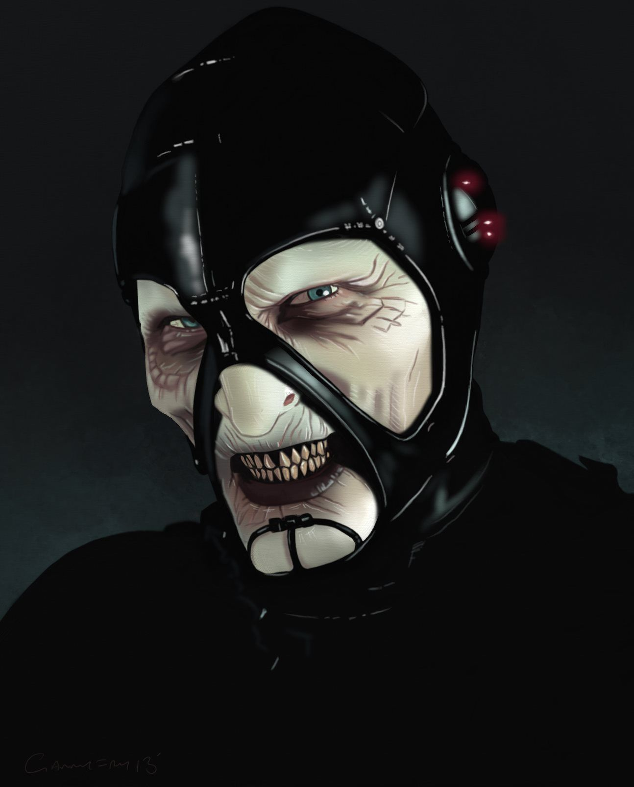
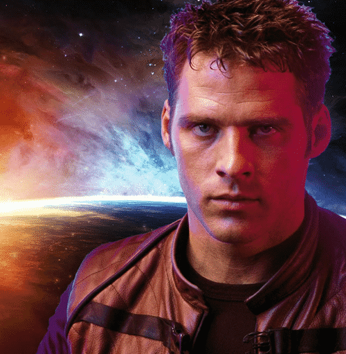
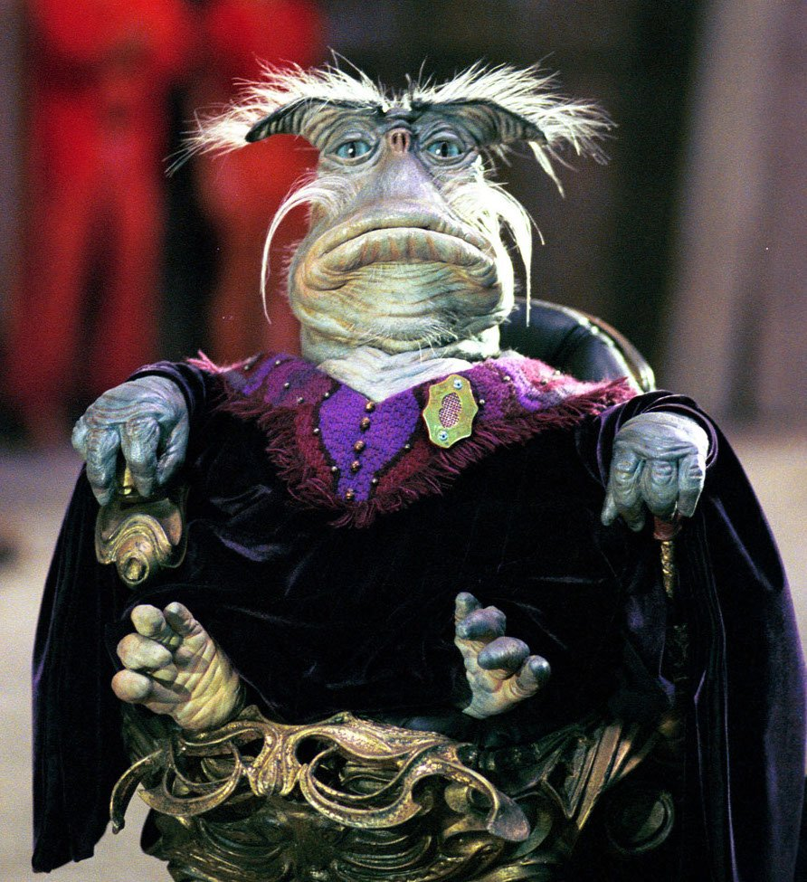
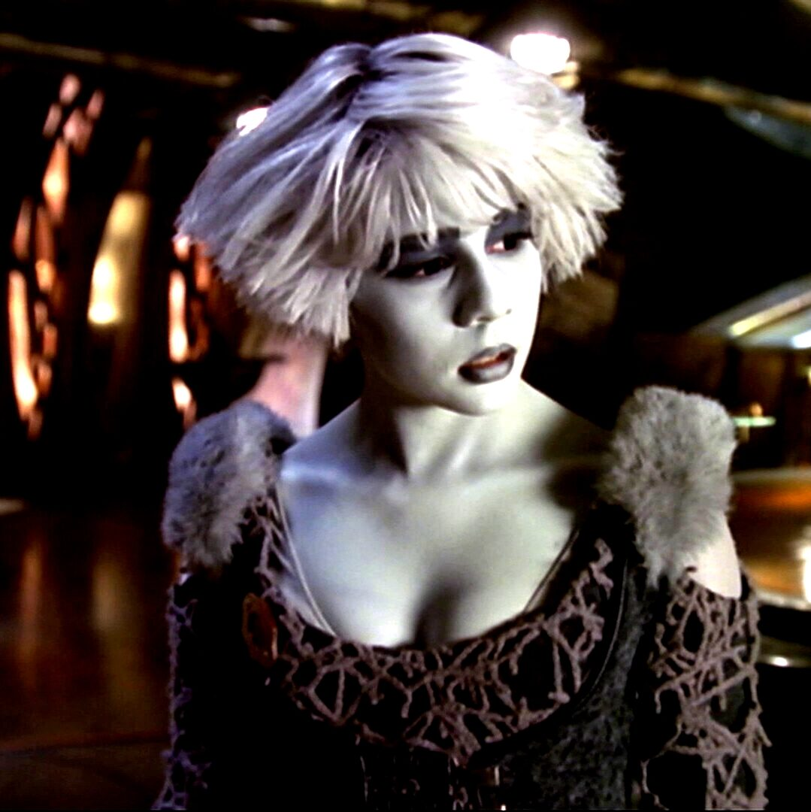
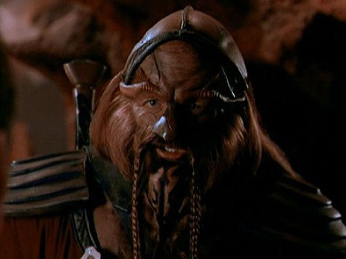

Answer a few questions to match up with the relevant character from Farscape! Click the 'Start' button to begin.
Please select an option.
Scorpius
Scorpius is tactical, highly intelligent and unrelenting. For Scorpius, victory is often assured even in the face of insurmountable odds. He laughs in the face of hard times and shrugs off hardship as if it's nothing.

Crichton
Crichton is funny, loyal, kind-hearted and tenacious. He has a solution for every problem, and no problem is too big for him to handle. He may not always opt for the obvious solution, but he gets the job done every time.

Rygel
Rygel is a sophisticated aristocrat who has a taste for the finer things in life. The thing he loves most is food, but he also has an appreciation for art, culture and history. He is not the most reliable member of the team.

Chianna
Chianna is carefree and easy-going. She has an optimistic outlook and a friendly personality. She does not allow the past to define her future, and while she has regrets, they don't stop her from living her life.

Dargo
Dargo is fierce, disciplined and wise. He comes across as aggressive but that's mainly becasue he isn't afraid to stand up for himself or to take matters into his own hands, when the situation calls for a crude approach.

Aeryn
Aeryn is usually the most serious person in the group. She prioritises work over play and doesn't much care for maintaining friendships or relationships outside of work, preferring instead to focus on the job.